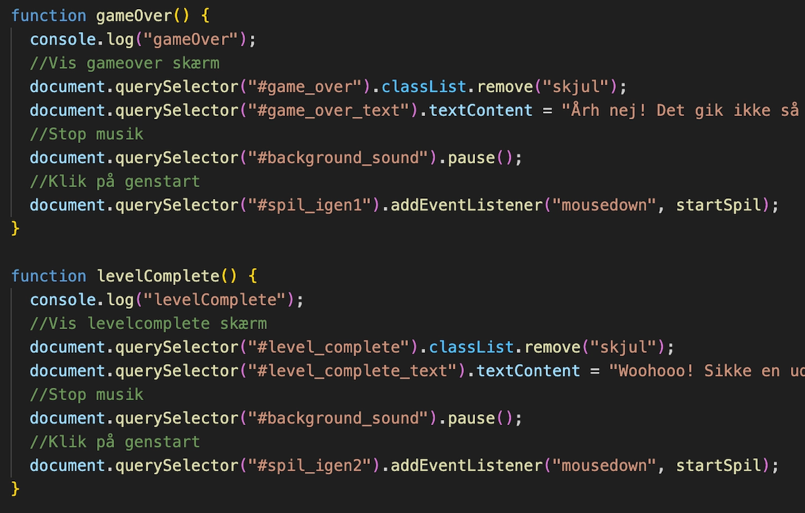

T4 - GRUNDLÆGGENDE ANIMATION
Beskrivelse af tema
I dette tema, grundlæggende animation, blev vi introduceret til at kode dynamiske websites ved hjælp af JavaScript. For at lære animation på en sjov måde fik vi til opgave at skabe et enkelt spil ved at bruge JavaScript sammen med CSS-animationer. I temaet begyndte vi med at lave en papirprototype for at illustrere spillets koncept. Vi arbejdede med formgivning af grafiske elementer i Adobe Illustrator og lærte om teorier og konventioner inden for UI-elementer, figurelementer, baggrundsdesign og kompositionsteknikker. Undervejs i processen lærte vi at arbejde med aktivitets- og state machine-diagrammer for at planlægge de interaktive funktioner i spillet.
Beskrivelse af opgave
I opgaven var målet at designe en hjemmeside, der gav et indblik i designprocessen og introducerede spillet på en enkel og forståelig måde. Spillet skulle være brugervenligt og have funktioner, der virkede efter hensigten, blandt andet en timer, liv og points. Der skulle inkluderes både gode og onde elementer samt lyde, der passede til de enkelte funktioner.
Jeg optog og redigerede lyde i Adobe Audition og implementerede dem i spillet for at gøre det mere underholdende. Jeg valgte at implementere baggrundsmusik til mit spil ved brug af JavaScript på følgende måde:
Inklusion af baggrundsmusik
HTML
JavaScript, Starter baggrundsmusik
Javascript, Stopper baggrundsmusik
Det sværeste ved denne opgave var at lave grafik i Adobe Illustrator. Det er en helt ny verden for mig, og det tog lang tid at lære værktøjet at kende. Jeg måtte erkende, at mine ambitioner for grafikken skulle sænkes for at nå i mål med opgaven. Senere har jeg brugt Adobe Illustrator til at lave logo og ramme til mit portrætbillede på mit portfolio-website.
Beskrivelse af metode
I denne opgave blev vi introduceret til testmetoden peer review. Jeg udførte testen ved at lave et spørgeskema i Google Forms, som gav mig tilbagemeldinger. Dette førte til ændringer af min cursor for at gøre den mere synlig i forhold til baggrunden, og justeringer af mit index site, hvor jeg reducerede tekstmængden og ændrede teksttypen, så den passede til resten af sitet i mit færdige design.
Et uddrag af relevante besvarelser, der gav grundlag til efterfølgende ændringer
Klik på knappen for at komme til opgaven: